ELE8458 | Winter 2026
Nonlinear loads and transformers
LED-load measurements, waveform distortion and three-phase transformer configurations.
- Status
- Team laboratory
- Focus
- Energy
- Tools and methods
- Power quality / Transformers / Measurements
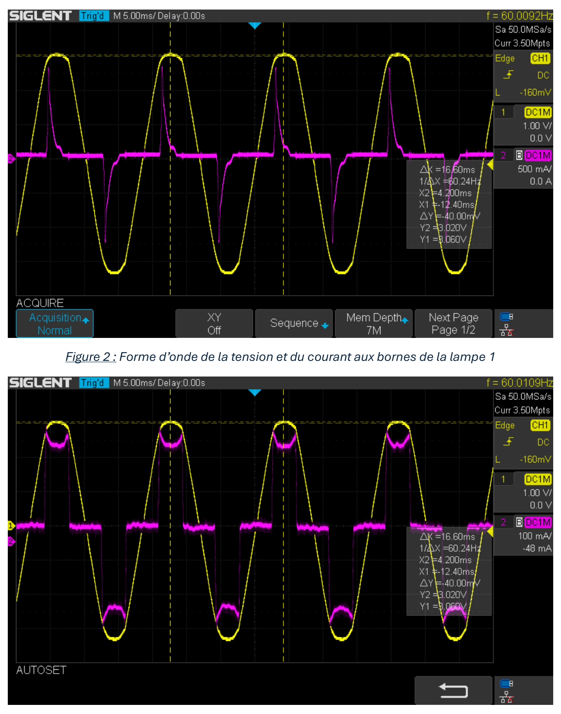
Objective
Investigate the electrical behavior of nonlinear lighting loads and compare transformer connections in a reduced laboratory setup.
Engineering work
- Characterize current and voltage waveforms for the tested loads.
- Record power and harmonic quantities with laboratory instruments.
- Compare three-phase winding configurations.
- Relate oscilloscope captures and instrument readings to the report calculations.
Outcome
The archive preserves wiring diagrams, oscilloscope captures, harmonic tables, instrument photographs and silent measurement clips. These provide both the experimental context and the recorded outputs.
Scope and limits
Different saved configurations and draft summaries are not treated as a single validated dataset. The lighting installation in the assignment is a teaching scenario, not a building commissioned by the team. No guaranteed THD reduction is claimed here.
Archive gallery 62 items

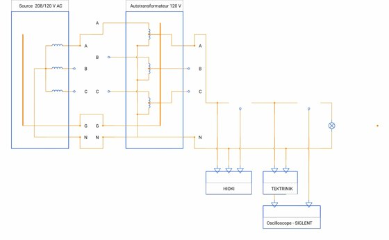

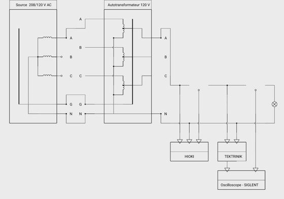

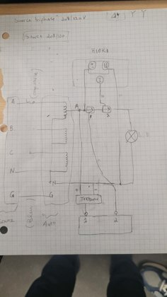

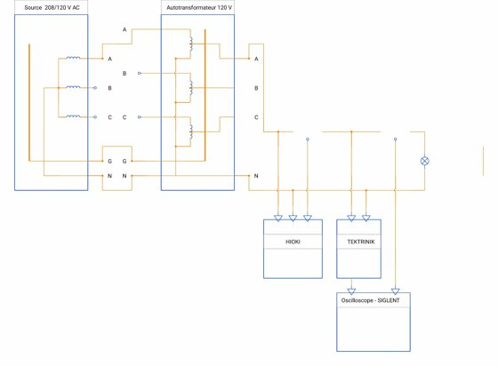

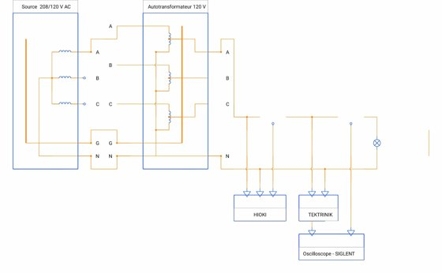

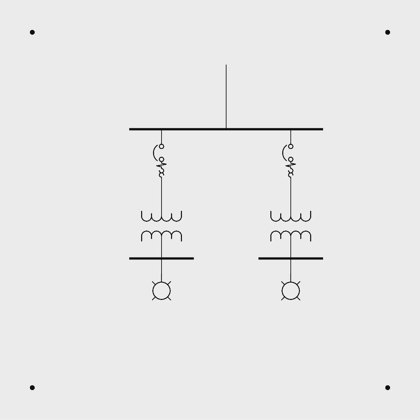

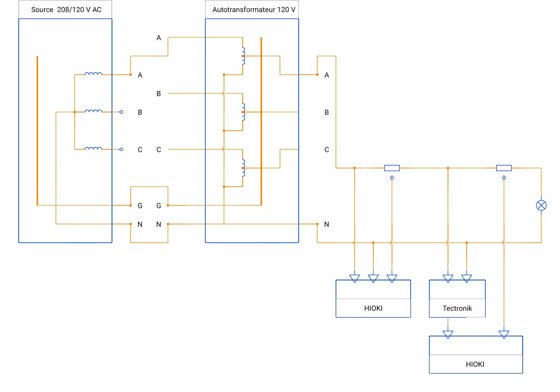

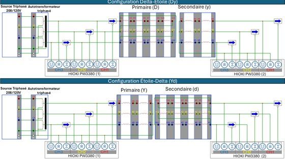

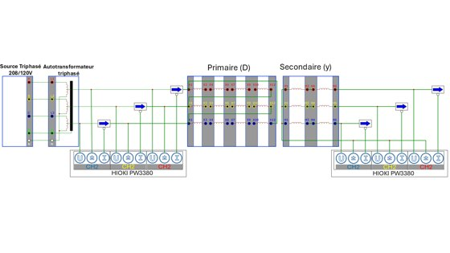

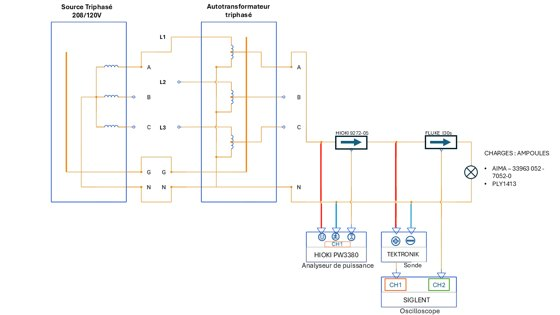

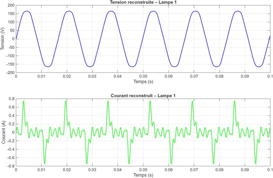

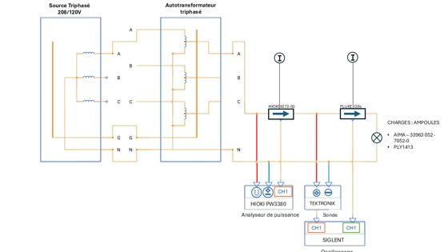

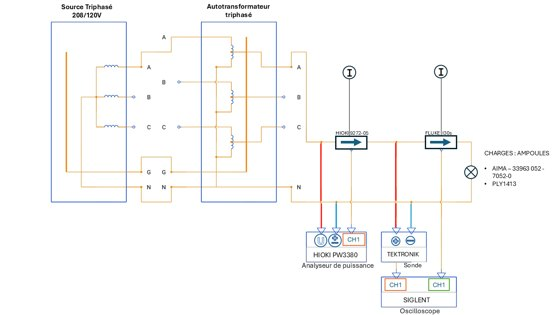

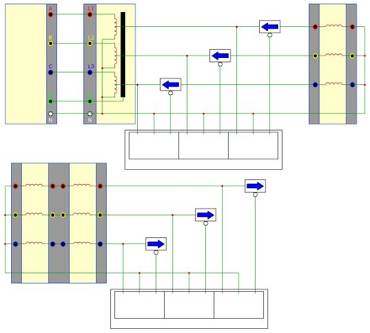

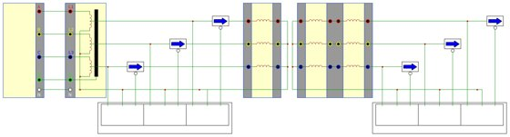

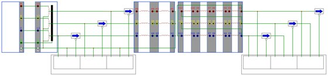

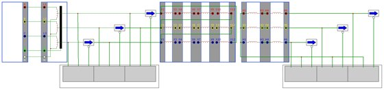

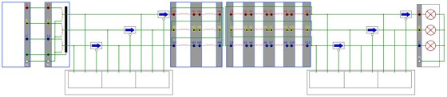


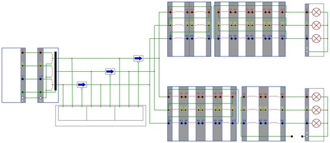

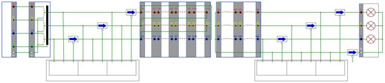

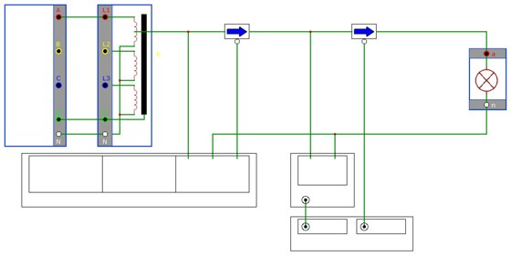

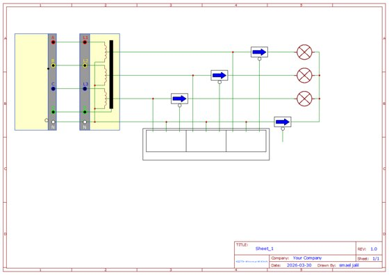

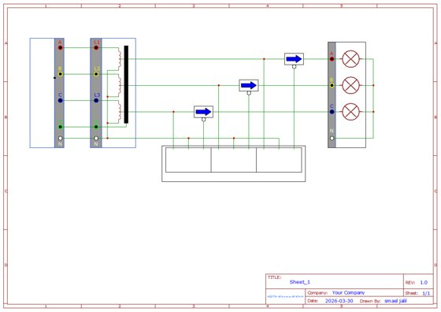

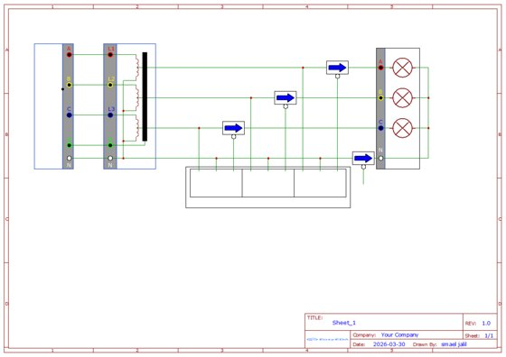

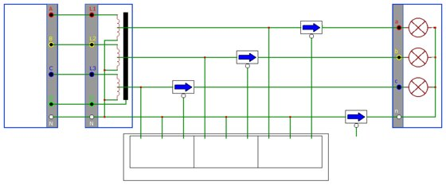

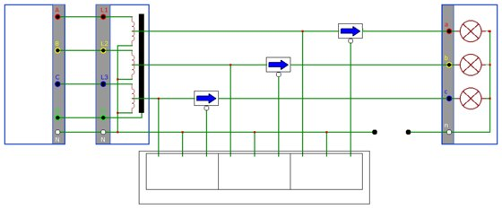

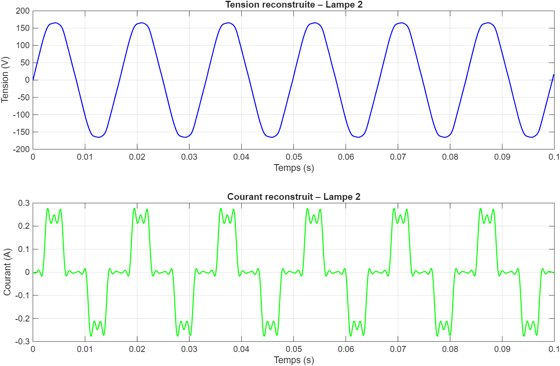

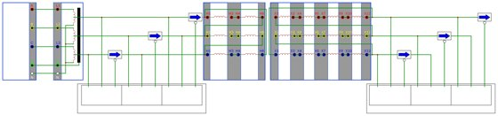

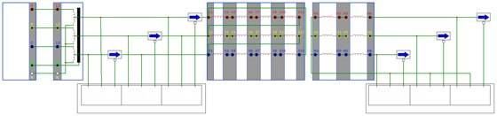

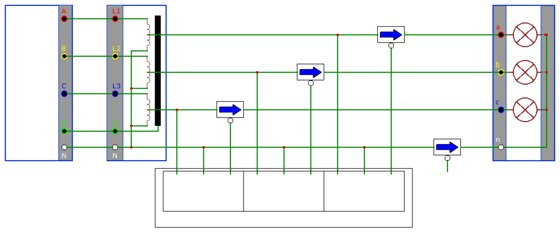

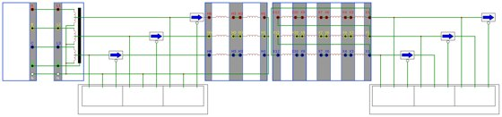

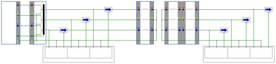

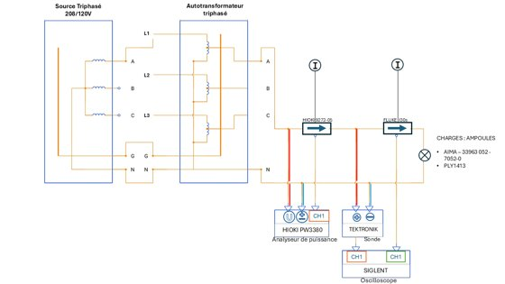


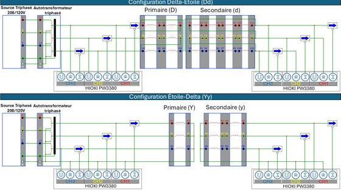


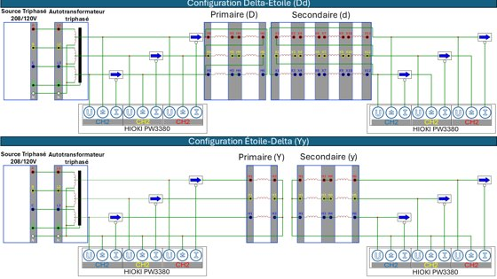

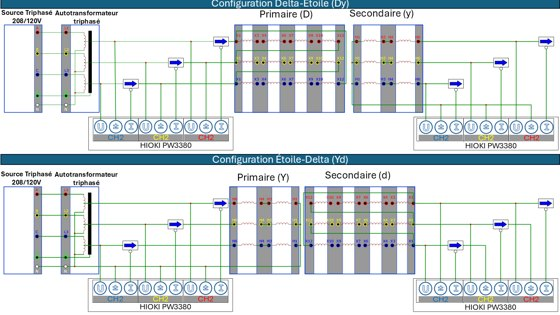


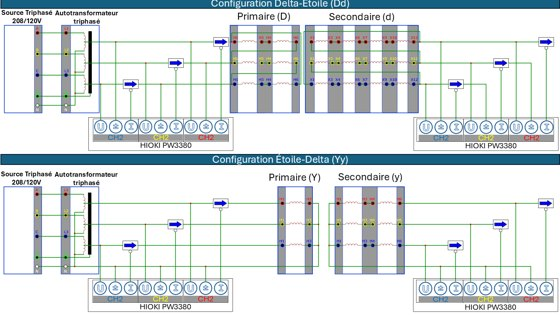


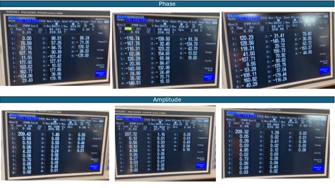


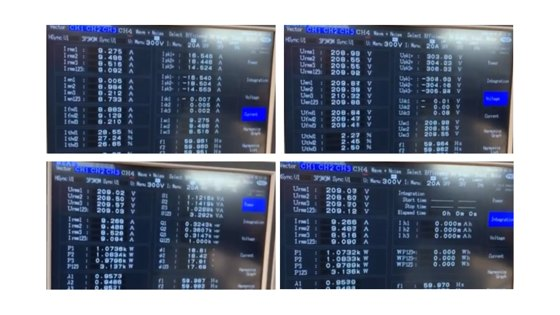

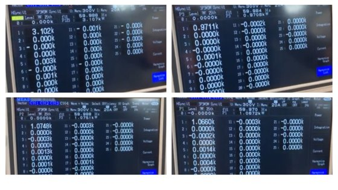

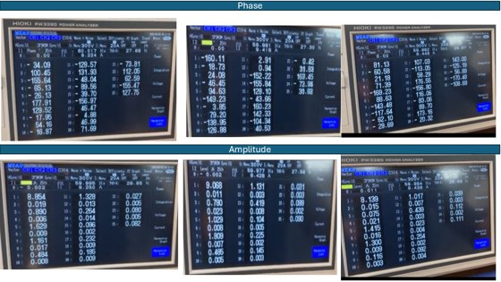

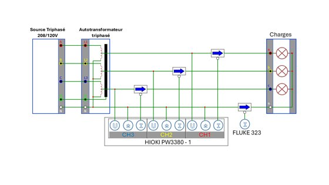


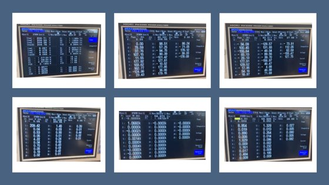

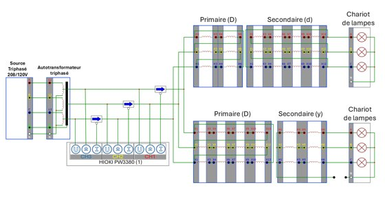

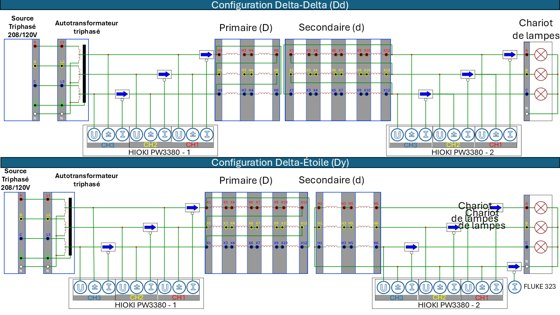

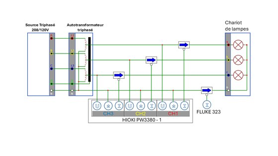

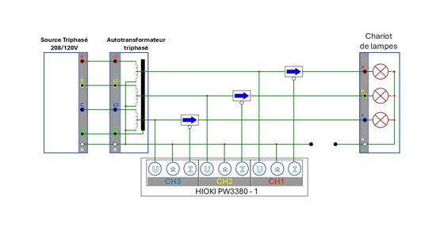

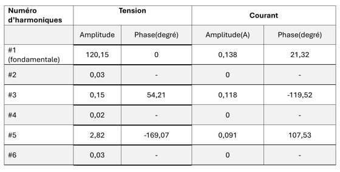
Evidence and documentation
ELE8458 TP3 part 1 report, saved transformer diagrams and instrument captures. Report excerpts are selected to omit team identifiers.